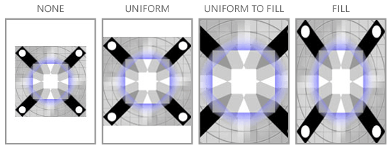

Windows/Windows phone中的MediaElement
MediaElement 为Windows应用商店应用提供的新特性
不同平台对音视频播放的支持
随着网络中各种音频和视频资源的不断丰富，很多移动应用都嵌入了音频和视频播放功能以满足人们的需求，从而吸引更多用户。各移动开发平台都提供了对音视频播放的支持。
Android通过MediaPlayer类支持播放音频和视频。MediaPlayer类处于Android media包的核心位置，是播放媒体文件最为广泛使用的类。MediaPlayer已设计用来播放大容量的音频文件以及同样可支持播放操作（停止、开始、暂停等）和查找操作的流媒体。
在 iOS 系统中利用MPMoviePlayerController 播放视频，AVAudioPlayer播放音频。
微软为windows应用商店应用和Windows phone开发提供了MediaElement用于支持音视频播放。MediaElement 提供了许多用于控制音频和视频播放的属性和方法，能够很好的满足开发需求。以下将详细介绍MediaElement 、windows和Windows phone中有关音视频播放的相关内容以及与android和ios中相应内容的比较。
Windows/Windows phone中的MediaElement
Windows 应用商店应用和Windows phone中都利用MediaElement实现播放音频和视频媒体。MediaElement 提供了许多用于控制音频和视频播放的属性和方法，向应用中添加媒体的操作十分简单，只需将 MediaElement 添加到标记并为要播放的媒体提供统一资源标识符 (URI)。
适用于Windows和Windows phone的特性
MediaElement 对象提供几个媒体特定的属性。下面的列表描述了常用的属性。
● AutoPlay：指定 MediaElement 是否应自动开始播放。默认值为 True。
● IsMuted：指定 MediaElement 是否静音。True 值将使 MediaElement 静音。默认值为 false。
● Volume：指定介于 0 到 1 的 MediaElement 对象的音频音量值，1 表示最大音量。默认值为 0.5。
除了媒体特定的属性之外，MediaElement 还具有 UIElement 的所有属性（如 Opacity 和 Clip）。
● Stretch：指定如何拉伸视频以填充 MediaElement 对象。可能的值有None、Uniform、UniformToFill 和 Fill。默认值为 Fill。下图演示 Stretch 值的示例。

MediaElement 对象提供了几个用于控制媒体播放的特定于媒体的方法。下面是其中一些常用的方法：
MediaElement 对象提供了几个特定于媒体的事件。下面是其中一些常用的事件：
|
方法 |
描述 |
|
当已验证并打开了媒体流且已读取了文件头时发生。 |
|
|
在 MediaElement 完成了音频或视频播放时发生。 |
|
|
当存在与媒体 Source 相关的错误时发生。 |
|
|
当 CurrentState 属性的值更改时发生。 |
另外，要阻止显示屏在不再检测到用户操作时（例如在应用播放全屏视频时）被停用，可以调用DisplayRequest.RequestActive。为了省电并延长电池寿命，你应当调用 DisplayRequest.RequestRelease 在不再需要显示请求时释放显示请求，例如，当媒体被暂停或停止时、当媒体结束时或者当应用被挂起时。
MediaElement 为Windows应用商店应用提供的新特性
Windows 8.1 引入了用于 MediaElement 的内置传输控件。 它们处理播放、停止、暂停、音量、静音、定位/前进，以及音轨选择。 要启用这些控件，请将AreTransportControlsEnabled 设置为 true。要禁用它们，请将AreTransportControlsEnabled 设置为 false。
Windows 8.1 引入了 IsFullWindow 属性来启用和禁用全屏呈现。 这可以确保在切换到全屏呈现时将启用系统优化。 在 Windows 8.1 和更高版本中，始终应当使用 IsFullWindow 属性来启用和禁用全屏呈现。
在早于 Windows 8.1 的版本中，开发人员负责创建用于控制音频和视频播放的自定义 UI。 例如，要在你的应用中启动媒体，你可以创建一个 Button 并在 Button 事件处理程序中调用 Play。 虽然 Windows 8.1 引入内置传输控件，但是如果你要支持额外功能或要使用自己的控件替代内置控件，则仍需要创建自定义 UI。 有关创建自定义传输控件的更深入的讨论，请参阅如何创建自定义媒体传输控件。
Windows phone中需要注意的事项
当您采用 XAML 添加 MediaElement 时，请始终命名 MediaElement。否则，在向 Windows Phone 商店 提交的过程中将不会授予媒体库安全功能。有关更多信息，请参见 Windows Phone 安全性。
当通过MediaElement播放音视频时，所有其他的媒体播放将被停止
不能同时使用多个MediaElement
Windows phone模拟器不支持MediaElement播放音视频
以下属性在Windows phone中不支持：
● Markers
●AudioStreamCount和Balance返回值总是1
●AudioStreamIndex属性返回值总是0
支持的编码格式
Android 和 ios支持的视频和音频格式
Android中支持的视频格式有H.263、H.264 AVC、MPEG-4 SP、VP8。支持的音频格式有AAC LC、HE-AACv1 、HE-AACv2 、AAC ELD 、AMR-NB、AMR-WB、FLAC、MP3、MIDI、Vorbis、PCM/WAVE。
iOS sdk中的MPMoviePlayerController 支持H.264 (Baseline Profile Level 3.0)和 MPEG-4 Part 2 video (Simple Profile)两种格式。AudioToolbox framework支持Core Audio Format (.caf)、Waveform audio (.wav)或者 Audio Interchange File (.aiff)三种格式
Windows phone中支持的音视频格式
Qualcomm 8x27、8x30 和 8960 处理器上支持的音频格式及编解码器如下表所示：
Qualcomm 8x30 和 8960 处理器上支持的视频格式及编解码器如下表所示：
有关其他处理器支持的音频和视频的格式请参见：支持的 Windows Phone 媒体编解码器
Windows应用商店应用
Windows应用商店应用中支持的音视频格式如下表所示：
|
媒体文件容器或文件格式 |
文件扩展名 |
媒体流格式（编解码器） |
|
|
视频 |
音频 |
||
|
MPEG-4 |
.3g2 |
H.263 H.264（基线、主、高） MPEG-4 Part2 SP 和 ASP |
AAC（LC、HE） |
|
.3gp2 |
|||
|
.3gp |
|||
|
.3gpp |
|||
|
.m4a |
不适用 |
AAC（LC、HE） MP3 AC3（DD、DD+） |
|
|
.m4v |
H.263 H.264（基线、主、高） MPEG-4 Part2 SP 和 ASP |
||
|
.mp4v |
|||
|
.mp4 |
|||
|
.mov |
|||
|
MPEG-2 |
.m2ts（例如 AVCHD） |
H.264 |
MPEG-2（L1、L2、仅立体声） MPEG-1（L1、L2） AAC（LC、HE） AC3（DD、DD+） |
|
ASF |
.asf |
VC-1 WMV9 |
WMA 标准 WMA 语音 WMA 无损 WMA Pro AC3（DD、DD+） |
|
.wm |
|||
|
.wmv |
|||
|
.wma |
不适用 |
||
|
ADTS |
.aac |
不适用 |
AAC（LC、HE） |
|
.adt |
|||
|
.adts |
|||
|
MP3 |
.mp3 |
不适用 |
MP3 |
|
WAV |
.wav |
不适用 |
PCM MP3 MS ADPCM IMA ADPCM MS DDITT G.711 MS GSM 6.10 AC3（DD、DD+） |
|
AVI |
.avi |
MPEG-4 Part2 SP 和 ASP Motion-JPG H.263 未压缩的 |
PCM MP3 MS ADPCM IMA ADPCM MS CCITT G.711 MS GSM 6.10 AC3（DD、DD+） |
|
AC-3 |
.ac3 .ec3 |
不适用 |
AC3（DD、DD+） |
播放不同来源的文件
被播放的文件可以来自应用程序、本地文件系统或者网络。Android中通过mediaPlayer 的setDataSource方法设置要播放的文件的路径。Ios同样通过MPMoviePlayerController和AVAudioPlayer的url以及 NSFileManager来配合实现播放文件源的设置。在Windows 和windows phone中通过设置MediaElement 的source属性来实现播放不同来源的文件。
要播放网络上的文件或应用程序附带的文件，请将 Source 属性设置为该文件的路径。
注意：当播放来自网络的媒体文件时，需要在你的项目的 Package.appmanifest 文件中设置 Internet (Client) 功能。 有关声明功能的详细信息，请参阅应用功能声明。
要打开本地系统上的或 Microsoft SkyDrive 中的文件，你可以使用 FileOpenPicker 获取文件并使用 SetSource 设置媒体源。 有关详细信息，请参阅如何使用 FileOpenPicker 控件打开媒体文件
后台播放
Android和IOS中的后台播放
后台播放音频是任何音视频播放应用都应该支持的功能。Android中利用 Service实现后台播放，一般 Service都运行于后台，完成诸如异步传输、下载等这些用户可能不会意识到其存在且不会与其进行交互的任务。但是后台播放任务不同于其他后台任务，用户能够意识到其存在并且随时可能与其进行交互。Android通过将这种后台任务转化为“前台任务”从而实现后台音频播放功能。更多详细信息参见Running as a foreground service。Ios中通过为Info.plist文件添加值为App plays audio的Required background modes键，并设置AVAdioSession实例来实现后台音频播放。
Windows phone中后台播放音频
您可以编写在后台播放音频的 Windows Phone 应用。这意味着，即使用户已通过按“返回”按键或“开始”按键离开您的应用，您的应用程序也可以继续播放音频。
Windows Phone 上的所有媒体都是通过 Zune 媒体队列播放的。后台音频应用程序向 Zune 媒体队列发送命令以设置当前堆栈、开始播放、暂停、快进、后退等。通过在 BackgroundAudioPlayer 类中调用方法来完成该操作。然后，Instance 对象与 Zune 媒体队列通信以操作音频的播放。
通用音量控制 (UVC) 是一组控件，当正在播放音频或当用户按音量控制开关时显示这些控件。UVC 还操作 Zune 媒体队列。因此，当您随后从应用程序开始播放某些内容时，可以使用 UVC 控制音频。UVC 向您应用程序中的AudioPlayerAgent 发送事件，从而允许您实现播放列表逻辑。将在本主题的后面部分对 AudioPlayerAgent 进行详细讨论。
有两种类型的后台音频应用程序：
● 一种类型实现简单的播放列表并将一个包含媒体文件地址的 Uri 传递给 Zune 媒体队列以设置当前曲目。Uri 可以是手机的本地或远程地址。在任何一种情况下，音频需要是 Windows Phone 支持的类型才能播放。有关有效的视频文件类型，请参见支持的 Windows Phone 媒体编解码器。
●另一种类型的后台音频应用程序使用 MediaStreamSource 实现音频流以向播放系统输送音频示例。此流的格式可以是您需要的任何格式，因为您实现一个从 MediaStreamSource 派生的类来处理音频的流处理以及对音频的解码。实现 MediaStreamSource 不在本文的讨论范围内。
这两种类型的应用程序共享多个部分。我们将开始讨论实现播放列表的应用程序。然后，我们将讨论使用MediaStreamSource (MSS) 实现流处理的部分。
播放列表应用程序
若要创建后台音频播放列表应用程序，您应实现两项内容：可以提供用于控制播放的用户界面的应用程序和可以实现派生自 AudioPlayerAgent 的类的程序集。您必须实现的这两个部分在下图中以绿色显示：
对音频应用程序进行流处理
若要创建流音频应用程序，您必须实现与播放列表应用程序相同的部分。具体来说，就是您必须创建一个提供用户界面的主应用程序，以及一个 AudioPlayerAgent。对于流音频应用程序，您还必须实现从AudioStreamingAgent 派生的一个类以及从 MediaStreamSource 派生的一个类。您必须实现的这些部分在下图中以绿色显示：
后台代理生命周期
您的 AudioPlayerAgent 是由 BackgroundAudioPlayer 在需要时创建的，用于处理来自您应用程序的用户界面或来自 UVC 的 UserAction 请求。
您的 AudioStreamingAgent 是由 BackgroundAudioPlayer 在需要新流时创建的。创建代理之后，BackgroundAudioPlayer 在您的 AudioStreamingAgent 中调用 OnBeginStreaming(AudioTrack, AudioStreamer) 方法。
当后台代理调用 Abort() 或 NotifyComplete() 时释放后台代理。
Windows应用商店应用后台播放
若要在后台播放音频，请声明 Audio 后台任务，并处理SystemMediaTransportControls 按钮。
要点： Windows 8.1 引入了 SystemMediaTransportControls 类，它可以替代Windows 8中的MediaControl 类。 你应该在应用中使用 SystemMediaTransportControls。
注意： 如果使视频流能够在后台播放，则当应用被切换到后台时，你将可以听到音频却看不到视频。这是设计使然。 这降低了设备在后台播放视频时的电量需求
为时应用可以后台播放音频，你必须显式声明你的应用将执行后台任务，步骤如下：
1. 在 Microsoft Visual Studio 中打开应用的项目文件。
2. 在解决方案资源管理器中双击 Package.appmanifest 文件以打开 Package.appmanifest 对话框。
3. 单击“声明” 选项卡，然后从“可用声明” 下拉框中选择“后台任务”。
4. 单击“添加”，然后选中“音频”复选框。
也可以通过使用在上面步骤中为音频创建的相同清单文件为视频流进行后台声明。若要执行此操作，请将“任务类型”属性设置为音频。
5. 指定入口点。在大多数情况下，如果你的项目被命名为 Foo，则你将指定 Foo.App。
然后，将 MediaElement 上的 AudioCategory 属性设置为 Communications 或 BackgroundCapableMedia。
最后，通过SystemMediaTransportControls 实现后台播放。即使应用声明要在后台播放音频，该应用必须通过将 IsPlayEnabled 和 IsPauseEnabled 设置为 true 来启用SystemMediaTransportControls 播放和暂停按钮。该应用还必须处理 ButtonPressed 事件，它可以在按下系统媒体传输控件按钮时通知应用。通过提供此最小事件处理支持，你可以为用户提供在无需将应用带至前台的情况下，播放或暂停音频的功能。
要从 ButtonPressed 事件处理程序更新 UI 线程上的对象（例如 MediaElement 对象），你必须通过CoreDispatcher 来封送调用。 这是因为不会从 UI 线程调用 ButtonPressed 事件处理程序。 只有 UI 线程可以修改 UI 线程上的对象。 如果你尝试从非 UI 线程修改 UI 对象，则会引发异常。 以下代码示例展示了如何执行此操作。
除了处理 ButtonPressed 事件，还必须在媒体状态更改（例如，当它暂停或播放）时通知SystemMediaTransportControls。 若要向 SystemMediaTransportControl 通知媒体状态更改，请将其PlaybackStatus 属性设置为 MediaPlaybackStatus 中的值之一。
注意 ：如果你的应用执行除流式播放音频或视频任务之外的其他任务，则当应用失去焦点并且不再是活动窗口时，该应用应停止执行非媒体相关工作。 你的应用仍流式播放音频，并且如果播放的是音频-视频流，则视频流将自动停止